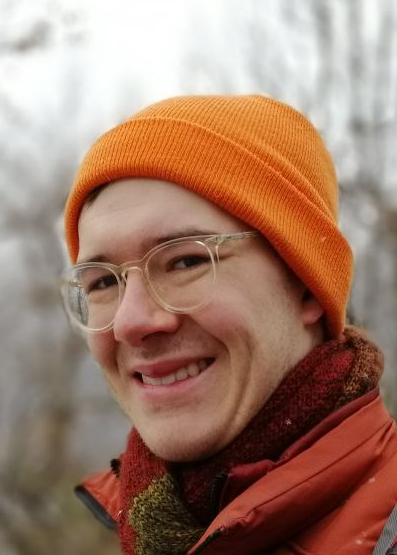

Eleventh Symposium on Compositional Structures (SYCO 11)
Palaiseau, France
20-21 April, 2023
Eleventh Symposium on Compositional Structures (SYCO 11)Palaiseau, France |
The Symposium on Compositional Structures is a series of interdisciplinary meetings aiming to support the growing community of researchers interested in the phenomenon of compositionality, from both applied and abstract perspectives, and in particular where category theory serves as a unifying common language. We welcome submissions from researchers across computer science, mathematics, physics, philosophy, and beyond, with the aim of fostering friendly discussion, disseminating new ideas, and spreading knowledge between fields. Submission is encouraged for both mature research and work in progress, and by both established academics and junior researchers, including students.
Submission is easy, with no format requirements or page restrictions. The meeting does not have proceedings, so work can be submitted even if it has been submitted or published elsewhere. You could submit work-in-progress, or a recently completed paper, or even a PhD or Masters thesis.
While no list of topics could be exhaustive, SYCO welcomes submissions with a compositional focus related to any of the following areas, in particular from the perspective of category theory:
This new series aims to bring together the communities behind many previous successful events which have taken place over the last decade, including Categories, Logic and Physics, Categories, Logic and Physics (Scotland), Higher-Dimensional Rewriting and Applications, String Diagrams in Computational, Logic and Physics, Applied Category Theory, Simons Workshop on Compositionality, the Yorkshire and Midlands Category Theory Seminar and the Peripatetic Seminar in Sheaves and Logic.
This event follows SYCO 1 in Birmingham, SYCO 2 in Strathclyde, SYCO 3 in Oxford, SYCO 4 in California, SYCO 5 in Birmingham, SYCO 6 in Leicester, SYCO 8 in Tallinn, SYCO 9 in Como, and SYCO 10 in Edinburgh.
Although we are unaffiliated, it might be interesting to note that we are just before the ETAPS 2023 conference, on related themes, which takes place in Paris, on 22-27 April 2023.
 |
 |
| Daniela Petrisan | Morgan Rogers |
| IRIF, Université de Paris | LIPN, Université de Paris 13 |
| TBA | Automorphisms of models: yet another categorification of model theory |
All deadlines are 23:59 anywhere-on-earth on the given dates.
Speakers are expected to present their contribution in person. Submissions must point out who will present the contribution if it is selected.
Registration for in person participation is now closed. It is however still possible to register for online participation. Registered online participants will be contacted by e-mail, closer to the meeting date, with the virtual coordinates.
Hover over a talk to see the abstract.
| Thursday 20 April 2023 |
|---|
| 10:30–11:30 REGISTRATION |
11:30–12:30 Daniela Petrisan (invited talk) TBA TBA |
12:30–13:00 Damiano Mazza A Categorical Approach to Descriptive Complexity Theory Descriptive complexity aims at characterizing complexity classes by reformulating the question “how hard is it for a machine to solve a problem?” to “how hard is it for logic to describe a problem?”. Finite model theory plays a crucial role in the development of this approach to complexity. Categorical logic is a vast generalization of model theory which includes, among many other things, finite model theory. In this talk, we will see how the ideas of descriptive complexity may be used in the context of categorical logic to give interesting characterizations of a number of standard complexity classes. |
| 13:00–14:00 LUNCH |
14:00–14:30 Mikołaj Bojańczyk, Le Thanh Dung Nguyen Algebraic Recognition of Regular Functions We consider regular string-to-string functions, i.e. functions that are recognized by copyless streaming string transducers, or any of their equivalent models, such as deterministic two-way automata. We give yet another characterization, which is very succinct: finiteness-preserving functors from the category of semigroups to itself, together with a certain output function that is a natural transformation. Semigroups are like monoids, but possibly without a unit element. Our result is analogous to the following classical theorem: a set of words over a finite alphabet, in other words a function from a finitely generated free monoid to {yes,no}, is a regular language – described by some regular expression, or equivalently recognized by some finite-state automaton – if and only if it factors through a homomorphism to a finite semigroup. Or to a finite monoid, but for our generalization to string-to-string functions, there are good technical reasons to work with semigroups instead. |
14:30–15:00 Sam van Gool, Paul-André Melliès, Vincent Moreau Profinite lambda-terms and parametricity The aim of this work is to combine profinite methods and models of the λ-calculus to obtain a notion of profinite λ-term which, we show, lives in perfect harmony with the principles of Reynolds parametricity. |
15:00–15:30 Victoria Vollmer, Daniel Marshall, Harley Eades, Dominic Orchard A Mixed Linear and Graded Logic Graded modal logics adapt traditional modal logics by refining modalities into families of modalities indexed by an algebraic structure which is reflected in operations relating the modalities. Graded of-course, which captures how many times a proposition is used, has an analogous interpretation to that of the of-course modality from linear logic; the ofcourse modality from linear logic can be modelled by a linear exponential comonad and the graded of-course can be modelled by a graded linear exponential comonad. Benton showed in his seminal paper on Linear/Non-Linear logic and models that the of-course modality can be split into two modalities connecting intuitionistic logic with linear logic forming a symmetric monoidal adjunction. Later, Katsumata demonstrated that every graded comonad can be decomposed into an adjunction. We give a similar result to Benton’s, showing that graded modalities can be split into two modalities connecting a graded logic with linear logic. We propose a sequent calculus, its proof theory and categorical model, and a natural deduction system. |
| 15:30–16:00 BREAK |
16:00–16:30 Uli Fahrenberg 2-Categories with Lax Tensors, With a Motivation from Concurrency Theory Concurrent Kleene algebra, introduced by Tony Hoare et.al. in 2011, extends Kleene algebra with a parallel composition operator. The result is a double monoid with a lax interchange law between concatenation (i.e. serial composition) and parallel composition. Its free models are series-parallel pomsets, that is, partial strings which a freely generated from the alphabet by binary serial and parallel composition. We have recently had occasion to consider a generalisation of serial composition where events in pomsets may continue across compositions. The resulting algebraic structure is a 2-category with a form of lax tensor; for the time being it is not clear what are its free models, nor whether they even exist. Further, ultimately we is interested in languages of pomsets, and lifting 2-categories (or just categories) across the powerset functor has turned out to be interesting just in and of itself. |
16:30–17:00 Simon Burton String diagrams for higher mathematics with wiggle.py We introduce wiggle.py which is a python based library for vector graphics rendering of 3-dimensional string (surface) diagrams for monoidal bicategories. The library uses linear constraint optimization, resulting in a highly customizable layout engine. |
17:00–17:30 Aziz Kharoof, Cihan Okay Simplicial distributions, convex categories and contextuality The data of a physical experiment can be represented as a presheaf of probability distributions. A striking feature of quantum theory is that those probability distributions obtained in quantum mechanical experiments do not always admit a joint probability distribution, a celebrated observation due to Bell. Such distributions are called contextual. Simplicial distributions are combinatorial models that extend presheaves of probability distributions by elevating sets of measurements and outcomes to spaces. Contextuality can be defined in this generalized setting. This paper introduces the notion of convex categories to study simplicial distributions from a categorical perspective. Simplicial distributions can be given the structure of a convex monoid, a convex category with a single object, when the outcome space has the structure of a group. We describe contextuality as a monoid-theoretic notion by introducing a weak version of invertibility for monoids. Our main result is that a simplicial distribution is noncontextual if and only if it is weakly invertible. Similarly, strong contextuality and contextual fraction can be characterized in terms of invertibility in monoids. |
| Friday 21 April 2023 |
|---|
9:30–10:30 Morgan Rogers (invited talk) Automorphisms of models: yet another categorification of model theory Model theory has inspired a wide spectrum of developments in category theory, often with a goal of recasting this very set-theoretic domain in a categorical framework. This vein still has plenty of ideas to mine, of which I shall present one originally suggested to me by the late Pieter Hofstra: the correspondence between closed subgroups of the (topological) automorphism group of a set and extensions of that set by relations. We recast this in terms of classifying toposes, and show how this enables us to restate the result with monoids in place of groups and almost arbitrary structures in place of sets. |
10:30–11:00 Joshua Wrigley The geometric and sub-geometric completions of doctrines TBA |
| 11:00–11:30 BREAK |
11:30–12:00 Hugo Paquet, Philip Saville Strong Pseudomonads and Premonoidal Bicategories Strong monads and premonoidal categories play a central role in clarifying the denotational semantics of effectful programming languages. Unfortunately, this theory excludes many modern semantic models in which the associativity and unit laws only hold up to coherent isomorphism: for instance, because composition is defined using a universal property. This work remedies the situation. We define premonoidal bicategories and a notion of strength for pseudomonads, and show that the Kleisli bicategory of a strong pseudomonad is premonoidal. As often in 2-dimensional category theory, the main difficulty is to find the correct coherence axioms on 2-cells. We therefore justify our definitions with numerous examples and by proving a correspondence theorem between actions and strengths, generalizing a well-known result. |
12:00–12:30 Matthew Di Meglio, Bryce Clarke An introduction to enriched cofunctors Cofunctors are a kind of map between categories which lift morphisms along an object assignment. In this paper, we introduce cofunctors between categories enriched in a distributive monoidal category. We define a double category of enriched categories, enriched functors, and enriched cofunctors, whose horizontal and vertical 2-categories have 2-cells given by enriched natural transformations between functors and cofunctors, respectively. Enriched lenses are defined as a compatible enriched functor and enriched cofunctor pair; weighted lenses, which were introduced by Perrone, are precisely lenses enriched in weighted sets. Several other examples are also studied in detail. |
12:30–13:00 Tobias Schmude, Benedikt Ahrens, Paige Randall North, Eric Finster, Nick Gurski Lax Functors of Opetopic Categories: Classifying Higher Functors via Spans and Profunctors The bicategories Span and Prof classify functors in the sense that functors into any small category B correspond to lax functors from B into Span and normal lax functors from B into Prof. The first corresponds to a displayed category over B, and the second generalizes the Grothendieck construction for fibrations. We attempt to generalize both to higher functors, in particular 2-functors between bicategories. This necessitates a notion of lax trifunctor, which is problematic since the notion found in the existing literature on tricategories is not well-defined in full generality. Constructing such a notion is work in progress. Our approach is to reverse-engineer a definition of lax trifunctor from the setting of opetopic higher categories, where there is a canonical notion of lax functor. Further goals include directly classifying opetopic functors, among others. |
| 13:00–14:00 LUNCH |
14:00–14:30 Matthew Sutcliffe Near-linear-time sampling of parameters in quantum circuits via implementation of symbolic phases into PyZX Quantum circuits may be simplified to smaller, less complex, circuits that are computationally cheaper to run. Parameterised quantum circuits may do so to lesser or greater extents, depending upon the values of the parameters. One may sample the parameters of such a circuit – evaluating its possible outcome states for all the various input parameter states. This is a general-purpose procedure for enumerating parameterised graphs for various (or all) choices of free parameters, with applications in circuit simplification, computing scalars, and in some circuit compilation tasks. The most straightforward method of achieving such parameter sampling is essentially to brute force every possible state of the circuit (that is to say, try every combination of parameter values). However, the runtime of this approach scales exponentially with the number of parameters in the circuit and becomes impractically slow for circuits of more than a few such parameters. In this paper, a new method of parameter sampling is introduced that achieves this same goal in a manner that (for most cases) scales linearly with the number of parameters. For typical circuits, this reduces the infeasible runtimes down to just seconds or even milliseconds. |
14:30–15:00 Kostia Chardonnet, Benoit Valiron, Renaud Vilmart Geometry of Interaction for ZX-Diagrams ZX-Calculus is a versatile graphical language for quantum computation equipped with an equational theory. Getting inspiration from Geometry of Interaction, in this paper we propose a token-machine-based asynchronous model of both pure ZX-Calculus and its extension to mixed processes. We also show how to connect this new semantics to the usual standard interpretation of ZX-diagrams. This model allows us to have a new look at what ZX-diagrams compute, and give a more local, operational view of the semantics of ZX-diagrams. |
15:00–15:30 Boldizsár Poór, Quanlong Wang, Razin A. Shaikh, Lia Yeh, Richie Yeung, Bob Coecke Completeness for arbitrary finite dimensions of ZXW-calculus, a unifying calculus The ZX-calculus is a universal graphical language for qubit quantum computation, meaning that every linear map between qubits can be expressed in the ZX-calculus. Furthermore, it is a complete graphical rewrite system: any equation involving linear maps that is derivable in the Hilbert space formalism for quantum theory can also be derived in the calculus by rewriting. It has widespread usage within quantum industry and academia for a variety of tasks such as quantum circuit optimisation, error-correction, and education. The ZW-calculus is an alternative universal graphical language that is also complete for qubit quantum computing. In fact, its completeness was used to prove that the ZX-calculus is universally complete. This calculus has advanced how quantum circuits are compiled into photonic hardware architectures in the industry. Recently, by combining these two calculi, a new calculus has emerged for qubit quantum computation, the ZXW-calculus. Using this calculus, graphical-differentiation, -integration, and -exponentiation were made possible, thus enabling the development of novel techniques in the domains of quantum machine learning and quantum chemistry. Here, we generalise the ZXW-calculus to arbitrary finite dimensions, that is, to qudits. Moreover, we prove that this graphical rewrite system is complete for any finite dimension. This is the first completeness result for any universal graphical language beyond qubits. |
| 15:30 END |
We propose that people who are there on the day before (Wednesdy 19 April) a meet at the pub Deer 'n' Beer located 4 allée Anita Conti in Massy, whenver they fill thirsty.
On the day after, we propose to go together to the Mama Kitchen Caffè restaurant (106 av de Paris in Massy) on the 20th of April. We have a reservation at 19h30. The meal is at participants' cost.
The symposium will be held in École Polytechnique, which is located in Palaiseau (France). It is near Paris in the southern area and there are very frequent trains between the two.
More precisely, the talks will take place in the Sophie Germain amphitheater of the computer science lab (laboratoire d'informatique in French) which is located in the Turing building of École Polytechnique (1 Rue Honoré d'Estienne d'Orves 91120 Palaiseau):
There is a high-speed train (TGV) station in Massy-Palaiseau (called Massy TGV), and it can be much faster and simpler going directly there than going through Paris.
In order to come from Paris, you should take RER B (or RER C) train line (see RATP for schedules) and stop either at
The travel takes roughly 30 minutes from Paris to Massy, and 20 minutes from Massy to École Polytechnique.
We recommend that you take a hotel in Massy, and come at École Polytechnique using the 91.06 or 91.10 bus from the train station (see above). Lodging in Paris is also possible, although expected to be more expensive. Here are some suggestions for hotels in Massy:
Some cheaper options might also be available from student housing facilities.
Participants, in person or online, include:
The symposium is managed by the following people. If you have a general question about SYCO, or if you want to propose to host a future iteration, please get in touch with a member of the steering committee.
The organization of the symposium has been made possible thanks to the participation of the LIX, the computer science laboratory of École Polytechnique.